Select Menu: Clip Boundaries
- Click, or hover, on any menu item in the image to read about that command. Skip the image

Previous Clip Boundary to Cursor
Selects from the current position of the editing cursor or selection backwards to the previous clip boundary, so extending the selection with each use to include further clips (or blank space) until the start of the track is reached.
- Starting with this selection ...
- 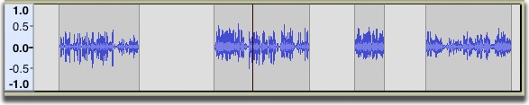
- after the first command the selection is extended from the editing cursor position to the start of the clip:
- 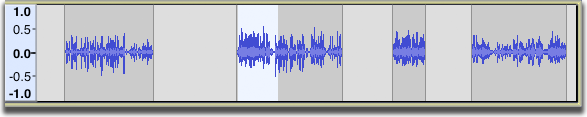
- after the second command the selection is extended to the end of the previous clip:
- 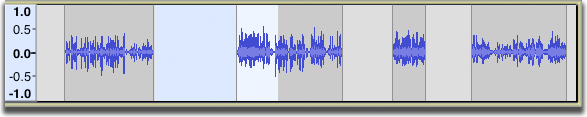
- and after the third command the selection is extended to the start of the previous clip:
- 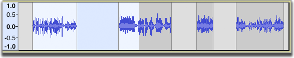
Cursor to Next Clip Boundary
Selects from the current position of the editing cursor or selection forwards to the next next clip boundary, so extending the selection with each use to include further clips (or blank space) until the final clip is reached.
- Starting with this selection ...
- after the first command the selection is extended from the editing cursor position to the end of the clip:
- 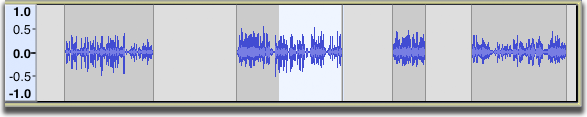
- after the second command the selection is extended to the start of the next clip:
- 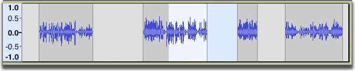
- and after the third command the selection is extended to the end of the next clip:
- 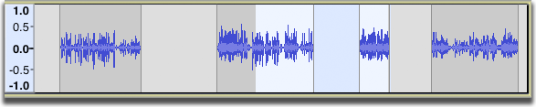
Previous Clip Alt + P
Moves or creates a selection so as to fully select in the current clip where the editing cursor or selection is. However if that cursor is already exactly at the start of the current clip or if the current clip is already fully selected, this command will fully select in the previous clip. Further use of Previous Clip then fully selects in the previous clip until the first clip is reached.
- Starting with this selection ...
- after the first command the clip containing the cursor is selected:
- 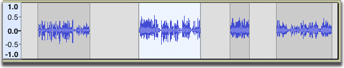
- after the second command the previous clip is selected:
- 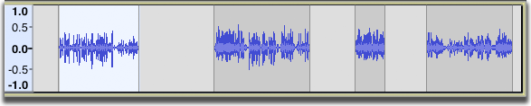
- Subsequent commands will do nothing since the first clip in the track is selected.
Next Clip Alt + N
Moves or creates a selection so as to fully select in the next clip. If the editing cursor is exactly at the start of a clip, this command selects all of that current clip.
- Starting with this selection ...
- after the first command the next clip is selected:
- 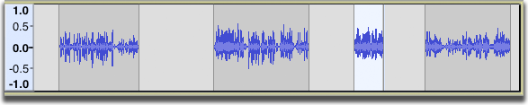
- after the second command the next clip is selected:
- 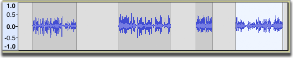
- Subsequent commands will do nothing since the last clip in the track is selected.